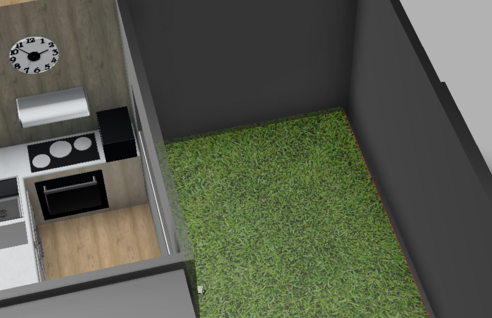

An area to sit down and entertain guests with an amazing movie experience, while you prepare meals. The area is equipped with a water-proof canvas, projector, and sound systems.
An outdoor cinema is a great feature for a tiny home because it is a space-efficient way to be entertained. It can be used as an outdoor living space and can be easily converted back into a storage space when not in use.
Open plan layout
The kitchen has been integrated within the living room, creating an open and spacious area for the guests to enjoy.
Furthermore, it less constricts the limits of the house, allowing the guests to enjoy the entire area, whilst effectively creating a flowing area to move around and continue with your daily schedule.
Security Monitoring
A security camera integrated with home automation ensures that your property is safe and secure when you are away from the home.
The security camera can detect movement and can be used to monitor the area to detect any suspicious activity.
This becomes more effective due to the placement, monitoring the front entrance to the property.

Raised Garden
The raised garden bed lightens up the property with greenery, with minimal maintenance work. The garden bed uses scheduled water irrigated water systems controlled by home automation. Additionally, the garden bed helps to reduce the warmth entering the home during summer time.
Secure Carport and entrance
The use of a single entrance gate and carport are good for safety and privacy because it allows for the home to be securely closed off from the outside world. This is especially important for a tiny home, which can be more vulnerable to break-ins and other security threats. By having a single entrance, you can control who has access to your home and ensure that only authorized people are able to enter. This can help to deter criminals and keep your home safe. Additionally, the carport can provide additional security by blocking the view of the home from the street and making it more difficult for someone to see inside.
The carport is equipped with a security system that can be used to monitor the area and detect any suspicious activity.